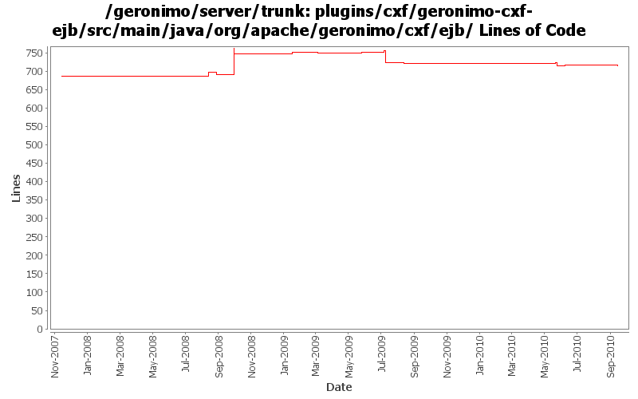

[root]/plugins/cxf/geronimo-cxf-ejb/src/main/java/org/apache/geronimo/cxf/ejb

| Author | Changes | Lines of Code | Lines per Change |
|---|---|---|---|
| Totals | 32 (100.0%) | 344 (100.0%) | 10.7 |
| gawor | 16 (50.0%) | 205 (59.6%) | 12.8 |
| xuhaihong | 4 (12.5%) | 92 (26.7%) | 23.0 |
| djencks | 4 (12.5%) | 32 (9.3%) | 8.0 |
| dblevins | 3 (9.4%) | 14 (4.1%) | 4.6 |
| jdillon | 5 (15.6%) | 1 (0.3%) | 0.2 |
Updates corresponding to OPENEJB-1354: Internal CoreDeploymentInfo class renamed to BeanContext
14 lines of code changed in 3 files:
Identify the interface type while exposing EJB as web service, or OpenEJB could not determine the current invocation type while the same interface is used for both business interface and endpointInterface
34 lines of code changed in 1 file:
a. remove the use of configurationUrl \n b. Add a BundleAwareReference interface
58 lines of code changed in 3 files:
fix compile problem
5 lines of code changed in 1 file:
GERONIMO-4645 use jacc ejb ws auth for jetty6, simplify SOAPHandler interface
1 lines of code changed in 1 file:
GERONIMO-4645 Make ejb ws security more jacc friendly, implement transport guarantees for jetty7 using jacc. See jira for more comments
20 lines of code changed in 1 file:
prefer openejb-jar.xml instead of geronimo-openejb.xml descriptor in ejb ws deployer and pass additional properties object to SoapHandlers
7 lines of code changed in 1 file:
GERONIMO-4553 Make web use of security realms depend on plugin visibility; make console expose the 'global' attribute for configuration (renamed from 'publish'). Also merges in geronimo-security changes from sandbox branches.
6 lines of code changed in 1 file:
Don't rely on config substitution properties in ejb jax-ws deployers (GERONIMO-4554)
13 lines of code changed in 1 file:
Support OASIS catalogs with Axis2 (GERONIMO-4501)
9 lines of code changed in 1 file:
support for specifying a list of http methods that should be secured for ejb-based web services (GERONIMO-4015)
0 lines of code changed in 2 files:
switch to AbstractJAXWSMethodInvoker to reuse more code
21 lines of code changed in 1 file:
implementation of some jaxws 2.1 api for ejbs
134 lines of code changed in 3 files:
quick fix to get trunk building again
5 lines of code changed in 1 file:
Make sure WebServiceContext.getEPR() returns right service address (part of GERONIMO-4263)
4 lines of code changed in 3 files:
upgrade to jax-ws api 2.1 (GERONIMO-4242)
12 lines of code changed in 1 file:
More loggers back to static
1 lines of code changed in 1 file:
(GERONIMO-3985) Use SLF4J as the primary logging facade for Geronimo
0 lines of code changed in 4 files:
let webservices.xml overwrite service endpoint interface attribute of the annotation (GERONIMO-3602)
0 lines of code changed in 2 files: